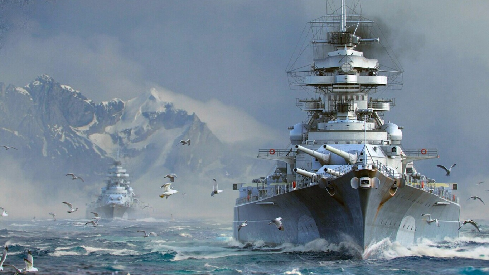
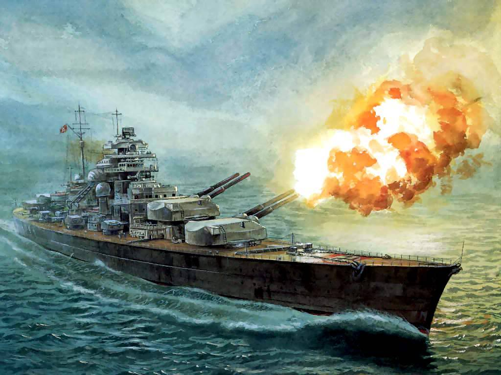

El acorazado Bismarck fue uno de los barcos mas grandes, bello y sin igual "Un gran drakkar, capaz de aguantar un tif�n sin miedo a revolcarse", este fue hecho en Alemania especialmente en la ciudad de Blohm & Voss (Hamburgo), este barco rompia con el tratado de "Versalles" por su gran tonelaje y grande poder de armas. En pocas palabras una declaraci�n de guerra a Inglaterra de manera indirecta, este zarp� listo para atacar en Noruega Bergen, el 14 de febrero de 1939, en donde estuvo activo por 8 meses en estos 8 meses tuvo su primera y ultima misi�nla cual era, irrumpir en el oc�ano Atl�ntico junto con el crucero pesado Prinz Eugen y atacar la navegaci�n aliada entre Estados Unidos y Gran Breta�a, ya que, habia sido detectado por un avi�n britanico Supermarine Spitfire de la real fuerza aerea, el cual aviso a embarcaciones cercanas como el, HMS Hood (barco insignia de la real fuerza aramada) y el HMS Prince of Wales, inmediatamente el 1er ministro Winston Churchill, ordeno sin pensarlo 2 veces el atacar y hundirlo o herirlo de gravedad, lo cual fue un rotundo error, ya que, el Bismarck contaba con tecnologia tan avanzada, como el poder de atacar sin que lo vieran por la corbatura del planeta, esto fue, lo que le dio la victoria en su primer enfrentamiento, ya que el DKM Prinz Eugen se adelanto y sufrio m�s da�os por parte de del Hood y el Prince of Wales, y en lo que esos 2 Acorazados estaban distraidos con el Prinz Eugen, pensando que era el Bismarck, mientras tanto el Bismarck, despues de varias andanadas sin exito, una andanada de balas explosivas impacta en el centro del Hood, justamente en la parte de la munici�n del buque haciendolo estallar, elevandose metros de altura y culminar en partirse a la mitad, todo esto fue en cuest�n de segundos, solamente sobreviveron 4 personas de 2200, que habia el Prince of Wales finalmente ve al Bismarck y le dio un tiro mortal que marcaria su camino, ya que, impacta en el combustible, tirando poco a poco, este se regresa a la Francia ocupada por lo Nazis.
Winston Churchill,le tenia un miedo enorme a el Bismarck, ya que ning�n barco se igualaba a el en su momento, pero el rencor naci�, cuando le destruyo su barco insignia HMS Hood condecorado, por sus haza�as durante la primera guerra mundial, solo por esta raz�n ordeno a sus m�s de 50 buques, destruirlo cueste lo cueste, lo encontrar�n a nada llegar al radio de la protecci�n de la fuerza aerea Alemana, cuando lo intercepta el HMS Rodeny, HMS King George V, HMS Dorsetshire los 3 abren fuego, el Bismarck se defiende heroicamente, contra todos los buques, mientras tanto el portaaviones HMS ark royal, preparo una escuadrilla de viejos Fairey Swordfish, torpederos, los cuales impactan en su veleta y se queda trabado dando vueltas el Acorazado, firmando asi su condena, , poco despues el barco se ladea, con 2 de sus torretas innmobiles, y a�n con esos da�os seguia disparando, finalmente se termino hundiendo y los pocos supervivientes.
Al pasar del tiempo se dice, que lo Ingleses lo hundieron, pero hace poco James Camer�n visito la gloriosa timba del Bismarck y revelo todo lo contrario, revelo que los Alemanes ordenar�n abrir las valvulas para llenar el barco y as� hundirlo, para que jamas tengan los ingleses la tecnologia Alemana. Y por esta razon la inteligencia Inglesa, no deja bajar a ver lo que alguna vez fue el terror de inglaterra.
Sabaton en su honor saco una canci�n en la cual relata su haza�a, dejo el link adjuntado:
click aqui para escuchar

Caracter�sticas generales del Bismarck
Desplazamiento � 41 700 tm est�ndar
� 50 300 t a plena carga
Eslora � 241,6 m en la l�nea de flotaci�n
� 251 m en total
Manga 36 m
Calado � 9,3 m est�ndar
� 9,9 m a plena carga1?
Blindaje � Cintur�n: 145-320 mm
� Cubierta acorazada: 80-120 mm
� Mamparo antitorpedo: 45 mm
� Torretas: 130�360 mm
� Barbetas: 220-340 mm
� Torre de mando: 220-360 mm
Armamento � 8 ca�ones SK 380 mm/C34 (4 � 2)
� 12 ca�ones de 150 mm (6 � 2)
� 16 ca�ones SK 105 mm/C33 (8 � 2)
� 16 ca�ones SK 37 mm/C30 (8 � 2)
� 12 ca�ones de 20 mm FlaK 30 (12 � 1)
Propulsi�n � 12 calderas Wagner
� 3 turbinas de vapor Bl�hm & Voss
� 3 h�lices de tres palas � 4,70 m
Potencia 150 170 CV
Velocidad 30,01 nudos (55,5 km/h) durante sus pruebas
Autonom�a 8870 mn (16 430 km) a 19 nudos (35km/h)
Tripulaci�n � 103 oficiales
� 1962 suboficiales y marineros
Aeronaves 4 hidroaviones Arado Ar 196
Equipamiento aeronaves 1 catapulta de doble final
